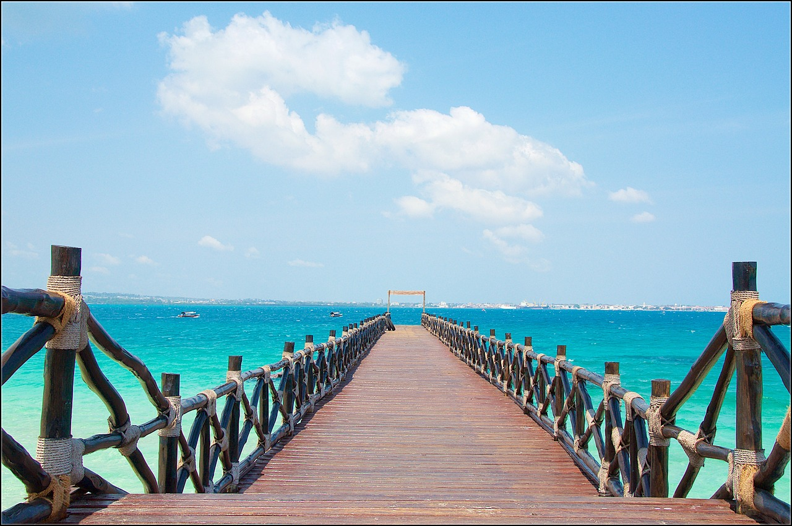

Latest News and Updates
Exploring the Hidden Gems of Zanzibar
Date: October 25, 2024

Discover the hidden treasures of Zanzibar that many tourists overlook. From secluded beaches to vibrant local markets, our latest tour offers a unique glimpse into the island's rich culture and natural beauty. Join us for an unforgettable experience that will leave you in awe. Our guides will take you to places that are off the beaten path, ensuring a memorable journey through the heart of Zanzibar.
Don't miss out on this opportunity to explore areas such as Pemba Island and the stunning Mnemba Atoll. These locations are not only picturesque but also steeped in history and tradition. Book your tour now and make your Zanzibar trip truly special!
New Tour Packages Launched!
Date: October 15, 2024

We are excited to announce the launch of our new tour packages tailored for adventure seekers and culture enthusiasts. Explore the wonders of Zanzibar like never before with exclusive offers and unique itineraries designed just for you. Our new packages include thrilling experiences such as diving with dolphins, spice tours, and cultural visits to local villages.
Experience the beauty of Zanzibar through our specially curated packages that cater to families, solo travelers, and couples alike. Enjoy the breathtaking scenery, delicious cuisine, and rich cultural heritage that the island has to offer. Don't wait—secure your spot today!
Tips for Your Zanzibar Adventure
Date: October 5, 2024

Planning a trip to Zanzibar? Check out our top tips for making the most of your adventure. From must-visit attractions to local delicacies you can't miss, we've got you covered for an incredible experience on the island. Be sure to explore Stone Town, a UNESCO World Heritage Site, and indulge in local dishes like biryani and fresh seafood.
Pack sunscreen, comfortable shoes, and a sense of adventure! Our knowledgeable guides will help you navigate through the island's stunning landscapes and vibrant culture, ensuring you have an unforgettable experience. Make the most of your time in Zanzibar by planning ahead and taking advantage of our tailored tours.